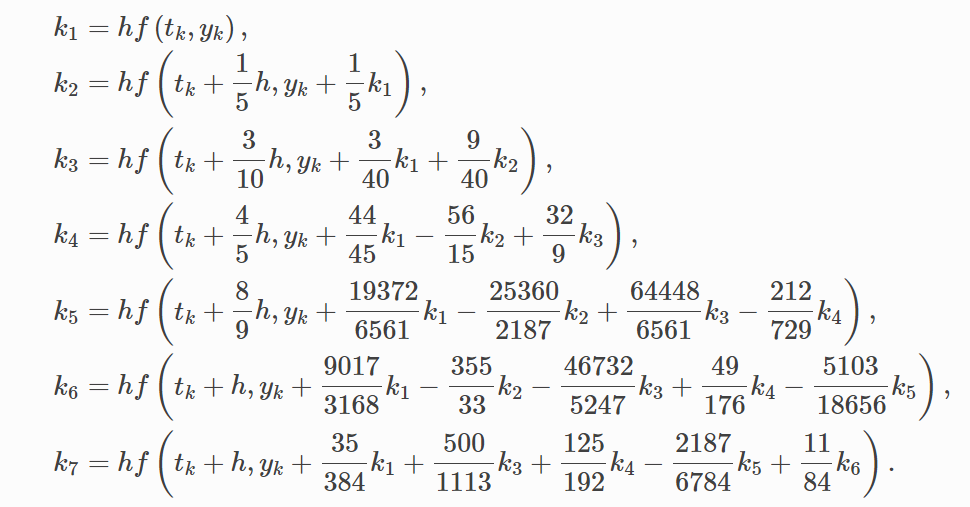
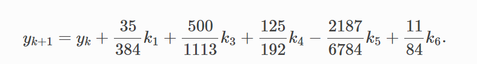
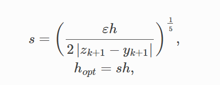
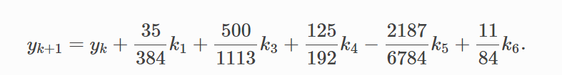
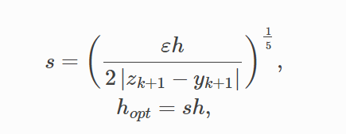
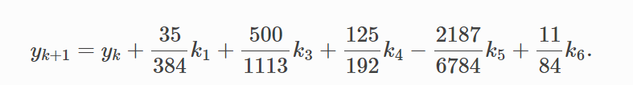
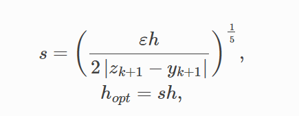

---------------------------------------------------------
 <--calculating steps needed for weighted slope  approximating next y value difference to approximatimate optimal step size  <--optimal step size
 


